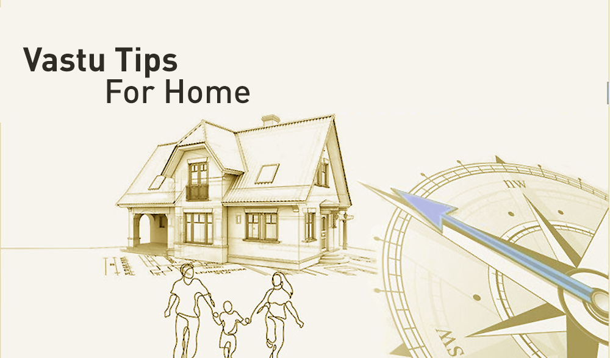

🔹 What is Vastu Shastra?
Vastu Shastra is the ancient Indian science of architecture and living. It is based on balancing the five elements – Earth, Water, Fire, Air, and Space – to create harmony in our surroundings. A balanced home invites peace, prosperity, health, and happiness.
🔹 General Vastu Tips for Every Home
- Keep the main entrance clean, well-lit, and clutter-free to attract positive energy.
- Always sleep with your head towards the South or East direction for good health.
- Place drinking water or water pots in the North-East corner of the house.
- Avoid mirrors reflecting people while sleeping.
- Use light wall colors like white, cream, or yellow for positivity.
- Plant tulsi or money plant in the East or North direction.
- Never keep broken clocks, watches, or damaged idols at home.
- Kitchen should ideally be in the South-East corner.
- Keep heavy furniture in the South-West direction.
- Use wind chimes or bells at the entrance to balance vibrations.
🔹 Vastu for Daily Prosperity
Even small daily practices can bring big changes. Keeping the home clean, allowing sunlight, and placing positive symbols like Om or Swastik at the entrance are simple remedies for peace and prosperity.
🔹 Why Vastu Matters?
Vastu Shastra aligns your home with natural energies. It removes obstacles in career, education, health, and relationships. A Vastu-friendly home not only looks beautiful but also radiates positivity.